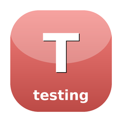

Test harness for TEA programs
The test harness SugarCraft pioneers that bubble-tea issue #1654 never shipped: ProgramSimulator for driving TEA programs with scripted input, Assertions for golden-file and cell-grid snapshots, and TapeRecorder for VHS demo capture.
composer require sugarcraft/candy-testing:@devuse SugarCraft\Testing\ProgramSimulator;
use SugarCraft\Testing\Input\ScriptedInput;
use SugarCraft\Testing\Snapshot\Assertions;
use SugarCraft\Core\Msg\KeyMsg;
use SugarCraft\Core\KeyType;
$sim = ProgramSimulator::for($program)
->send(new KeyMsg(KeyType::Character, '+'))
->send(new KeyMsg(KeyType::Enter))
->run();
Assertions::assertGoldenAnsi(__DIR__ . '/fixtures/counter.golden', $sim->view);
echo "Final count: " . $sim->model->count();| Class | Method | Description |
|---|---|---|
| ProgramSimulator | for(Program): self | Factory: wrap a Program |
| ProgramSimulator | send(Msg): self | Fluent message enqueue |
| ProgramSimulator | withFakeCmdRunner(callable): self | Intercept commands |
| ProgramSimulator | run(): TestResult | Drain queue, return result |
| TestResult | model: object | Final model after all messages |
| TestResult | view: string | Last view() output |
| TestResult | cmds: list<Closure> | Captured commands |
| TestResult | output: string | Raw accumulated ANSI bytes |
| Assertions | assertGoldenAnsi(string, string): void | Golden file snapshot assertion |
| Assertions | assertCellGrid(array, Buffer): void | Cell-by-cell buffer comparison |
| Assertions | assertAnsiEquals(string, string): void | Byte-exact ANSI diff |
| GoldenFile | load(string): ?string | Load golden file contents |
| GoldenFile | save(string, string): void | Save golden file |
| TapeRecorder | to(string): self | Factory: create recorder |
| TapeRecorder | header(...): self | Write VHS header |
| TapeRecorder | type(string): self | Record keypress |
| TapeRecorder | enter(): self | Record Enter key |
| TapeRecorder | sleep(float): self | Record delay |
| TapeRecorder | save(): void | Write .tape file |
| ScriptedInput | new(): self | Factory: empty input builder |
| ScriptedInput | key(string): self | Append character key |
| ScriptedInput | enter(): self | Append Enter key |
| ScriptedInput | arrow(string): self | Append arrow key |
| ScriptedInput | build(): list<Msg> | Return message sequence |